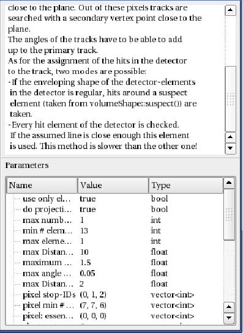

This work is licensed under a cc by-nc-sa 3.0 Unported License unless marked otherwise.
|
The AlgorithmDisplay shows the properties of a single algorithm. It can be shown in read-only-mode, where the user doesn't have the possiblity to modify the displayed algorithm. The window consists of two parts: the description is shown in the upper part in a QTextEdit-environment and the parameters are shown in the lower part in a QTreeWidget. Note that the user cannot change the name or the ID of the algorithm with this widget. |  |
|
This work is licensed under a cc by-nc-sa 3.0 Unported License unless marked otherwise. |